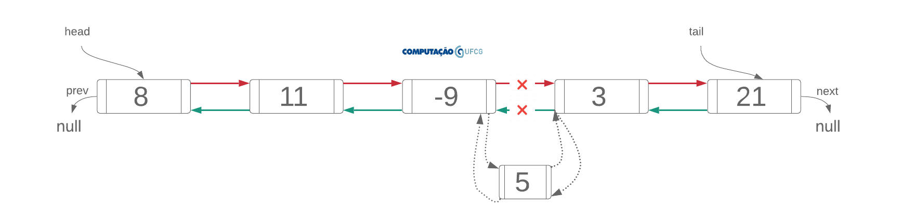

Listas Ligadas (LinkedList)
Problemas
No material sobre ArrayLists discutimos algumas preocupações oriundas do uso de arrays e que estão todas conceitualmente relacionadas ao fato de que o array é uma estrutura de tamanho fixo. Isso impede o seu crescimento de forma dinâmica. Sempre que for preciso crescer a capacidade de um array é preciso criar um novo e transferir todos os elementos do array original para essa nova instância, o que é uma operação com tempo de execução $O(n)$.
O fato do array ter tamanho fixo também implica em operações de remanejamento de elementos durante a inserção em uma posição arbitrária (shiftParaADireita) e durante a remoção de um elemento (shiftParaAEsquerda), ambas com tempo de execução $O(n)$.
Por último, por definirmos de antemão o tamanho da estrutura, é possível que a quantidade de elementos no array seja menor do que a sua capacidade. Esse pode ser um problema de menor magnitude e importância atualmente porque a memória “desperdiçada” pode ser considerada irrelevante. Contudo, conceitualmente é importante discutir esse fato porque o uso indiscriminado de memória, quando cumulativo, pode gerar problemas.
LinkedList
LinkedLists podem ser vistas como contraponto à estruturas baseadas em arrays. LinkedList são listas dinâmicas. Ao contrário de estruturas baseadas em arrays, os objetos de uma LinkedList são criados e removidos sob demanda.
Como isso é feito?
Através da criação de objetos que possuem referências para seus vizinhos. Ou seja, encadeando os objetos. Daí o nome de lista encadeada.
E que objetos são esses?
Nós. Criamos nós que guardam a informação que queremos manipular e referências para seus vizinhos, que são do mesmo tipo. No nosso caso, vamos guardar objetos do tipo Aluno, que possuem matrícula e nome. Contudo, para fins didáticos, na visualização vamos identificar apenas com um número inteiro. Vamos ao código:
class Node {
Aluno aluno;
Node next;
Node prev;
public Node(Aluno aluno) {
this.aluno = aluno;
this.prev = null;
this.next = null;
}
}
Esta é uma classe auxiliar com visibilidade default e criada dentro do mesmo arquivo da classe LinkedList. Tomei essa decisão de projeto para evitar a manipulação verborrágica de referências através de getNext() e setNext().
Visualmente, objetos do tipo Node podem ser representados da seguinte maneira:
Node exemploNode = new Node(new Aluno(8, "João"));

Vamos descrever bem o que cada coisa significa. Primeiro, estamos chamando de valor o objeto do tipo aluno armazenado no Node (representado apenas por um número inteiro). O valor pode ser um objeto de qualquer tipo, pois a lista é uma estrutura de propósito geral. Escolhemos o tipo Aluno para fins didáticos e escolhemos representá-lo visualmente como um inteiro para simplificar nossa vida.
exemploNode é uma referência para um objeto do tipo Node.
prev e next são referências para objetos do tipo Node. next aponta para o próximo Node, que no nosso primeiro exemplo é null enquanto prev aponta para o Node anterior, que também é null. Como cada nó tem referências para o anterior e para o próximo, chamamos essa lista de duplamente encadeada.
Como usar objetos do tipo Node para criar uma lista? Em termos simplistas, ligando os nós. Veja:
...
Node a = new Node(new Aluno(8, "João"));
Node b = new Node(new Aluno(11, "Marielle"));
a.next = b;
b.prev = a;
...

Em primeiro lugar, criamos dois nós: a e b. Depois, fizemos a.next apontar para o nó b (destaque em vermelho) e b.prev apontar para a (destaque em verde). Com essas instruções encadeamos os objetos e temos agora uma lista com dois elementos e podemos, apenas a partir da referência do primeiro, acessar o segundo. Como? a.next.
Note que os objetos foram criados em tempo de execução. Ou seja, a lista é criada dinamicamente sem que seja preciso definir o seu tamanho em tempo de compilação.
Vamos analisar a lista abaixo.

Não precisamos guardar todas as referências para os nós criados. Nesse caso apenas guardamos uma referência para o início da lista (head) e vamos encadeando os nós para formar a lista. Guardamos também uma referência para o fim da lista (tail) para efetuar adicionar elementos no final da lista de maneira mais eficiente, como vamos discutir adiante.
Uma LinkedList é nada mais do que um controlador dessas referências. Vamos ver como isso se dá em código:
public class LinkedList {
private Node head;
private Node tail;
private int size;
public LinkedList() {
this.head = null;
this.tail = null;
this.size = 0;
}
public boolean isEmpty() {
return this.head == null;
}
...
}
Organização interna: atributos, construtor e isEmpty
Primeiro, vamos às definições de atributos e do construtor. A classe LinkedList possui três atributos: uma referência para o início da lista, outra para o fim e um inteiro representando a quantidade de elementos na lista. No construtor default esses atributos são iniciados com null, null e 0, respectivamente. Eu sei que não é preciso fazer isso porque os valores default de Java para esses tipos são os mesmos que atribuí no construtor. Contudo, eu prefiro deixar isso explícito para que fique claro para quem está aprendendo e ainda não é fluente com as particularidades da linguagem.
isEmpty()
Este método verifica se a lista está vazia ou não. A verificação é feita comparando head com null. Se essa comparação for verdadeira, significa que não elemento algum na lista, pois head é a referência que controla o início e a partir da qual conseguimos acessar os outros elementos.
Operações básicas: inserção, busca e remoção.
Inserção
Vamos abordar três tipos de inserção e uma lista encadeada:
addLast(Aluno aluno)addFirst(Aluno aluno)add(int index, Aluno aluno)
addLast(Aluno aluno). O primeiro método adiciona um elemento no final da lista. Como mantemos uma referência para o final da lista, a única preocupação aqui é saber se trata-se do primeiro elemento a ser adicionado. Caso seja esse o cenário, ambos, head e tail, passam a apontar para o novo elemento. Caso contrário, precisamos fazer o novo elemento assumir o papel de tail. Vamos ao código:
...
public void addLast(Aluno aluno) {
Node newNode = new Node(aluno);
if(isEmpty()) {
this.head = newNode;
this.tail = newNode;
} else {
this.tail.next = newNode;
newNode.prev = tail;
this.tail = newNode;
}
this.size += 1;
}
...
Em um primeiro momento, criamos o nó que será adicionado. Depois, verificamos se a lista está vazia. Se estiver, head e tail apontam para o novo nó. Caso contrário, efetuamos 3 passos:
-
adicionamos o novo nó à frente de tail com a instrução
this.tail.next = newNode; -
fazemos com que o anterior do novo nó seja tail com a instrução
newNode.prev = tail; -
o fim da lista passa a ser o novo nó
this.tail = newNode.
A adição de um elemento ao final da lista é realizada em tempo constante $O(1)$, pois envolve apenas a verificação de uma expressão booleana e algumas manipulações de referências.
Note que apenas a primeira adição impacta na referência head. No entanto, todas as adições impactam a referência tail, pois todo novo elemento passa a ser considerado o fim da lista.
addFirst(Aluno aluno). Este método adiciona elementos no início da lista. Nesse cenário também é preciso verificar se a lista está vazia. Caso seja esse o cenário, ambos, head e tail, passam a apontar para o novo elemento. Caso contrário, precisamos fazer o novo elemento assumir o papel de head.
...
public void addFirst(Aluno aluno) {
Node newNode = new Node(aluno);
if (isEmpty()) {
this.head = newNode;
this.tail = newNode;
} else {
newNode.next = this.head;
this.head.prev = newNode;
this.head = newNode;
}
size += 1;
}
...
Em um primeiro momento, criamos o nó que será adicionado. Depois, verificamos se a lista está vazia. Se estiver, head e tail apontam para o novo nó. Caso contrário, efetuamos 3 passos:
-
adicionamos o novo nó atrás de head com a instrução
newNode.next = this.head; -
fazemos com que o anterior de head aponte para o novo nó com a instrução
this.head.prev = newNode; -
o início da lista passa a ser o novo nó, ou seja,
this.head = newNode.
A adição de um elemento no início da lista é realizada em tempo constante $O(1)$, pois envolve apenas a verificação de uma expressão booleana e algumas manipulações de referências.
Note que apenas a primeira adição impacta na referência tail. No entanto, todas as adições impactam a referência head, pois todo novo elemento passa a ser considerado o início da lista.
add(int index, Aluno aluno). A semântica deste método é: encaixar um novo elemento no índice passado como parâmetro “afastando” os elementos à frente para a direita. O uso das aspas em afastando é para chamar atenção para o fato de que não precisamos executar a operação de shift $(O(n))$, mas apenas alterar as referências ($O(1)$).
Vamos supor que o foi efetuada a chamada lista.add(3, new Aluno(5, "Amarildo")), em que queremos adicionar o objeto com matrícula 5 na posição 3 da lista. Veja a ilustração abaixo:

Note que o objeto com matrícula 5 vai assumir a posição 3 da lista. Para isso precisamos alterar as seguintes referências:
- O next do novo nó passa a ser o nó com valor 3;
- O prev do novo nó passa a ser o nó com valor -9;
- O next do nó com valor -9 passa a ser o novo nó;
- O prev do nó com valor 3 passa a ser o novo nó.
A essa altura você já deve ter percebido que listas encadeadas não são indexadas como as listas baseadas em arrays. Isto é, não há como acessar em tempo constante a n-ésima posição da lista, pois não há como executar a instrução listaEncadeada[index]. É preciso iterar até a posição index para adicionar o novo elemento. Lembrando que temos apenas as referências para o início e o fim da lista. Assim, precisamos partir do início da lista até uma posição index navegando através das referências next.
Vamos analisar detalhadamente o código do método add(int index, int value) para discutirmos essas preocupações.
...
public void add(int index, Aluno aluno) {
if (index < 0 || index > size)
throw new IndexOutOfBoundsException();
Node newNode = new Node(aluno);
if (index == 0) {
this.addFirst(aluno);
} else if (index == size - 1) {
this.addLast(aluno);
} else {
Node aux = this.head;
for (int i = 0; i < index - 1; i++)
aux = aux.next;
newNode.next = aux.next;
aux.next = newNode;
newNode.next.prev = newNode;
newNode.prev = aux;
size += 1;
}
}
Em primeiro lugar, verificamos se o índice passado como parâmetro é válido. Caso não seja, lançamos uma exceção.
Caso index seja válido, criamos o novo nó e precisamos agora identificar 3 casos. Se o index == 0, basta invocarmos o método addFirst, que já implementamos. Se index == size, basta invocarmos o método addLast, que já implementamos. Caso contrário, caímos no cenário da Figura acima. Então, precisamos iterar até a posição index - 1 e manipular as referências.
Como iterar em uma lista encadeada?
...
Node aux = this.head;
for (int i = 0; i < index - 1; i++)
aux = aux.next;
...
Inicialmente criamos uma referência auxiliar (aux). Ela inicialmente aponta para head e, a cada passo da iteração, vai sendo atribuída para o próximo da lista (aux = aux.next). Não fazemos isso diretamente com a referência head porque perderíamos a referência para o início da lista. Por isso é preciso criar um auxiliar.
Ao término desse laço, aux estará apontando para o nó que será o anterior do novo nó. Vamos relembrar o cenário:

Note que aux aponta para o nó com valor -9 após o loop. Apenas com uma referência para esse nó podemos então encaixar o novo nó com as instruções:
...
newNode.next = aux.next;
aux.next = newNode;
newNode.next.prev = newNode;
newNode.prev = aux;
...
A adição de um elemento em uma posição arbitrária da LinkedList é $O(n)$, pois envolve iterar sobre a lista e, no pior caso, o índice passado como parâmetro é da ordem do número de elementos presentes.
Busca
Vamos explorar 5 formas de acesso a elementos de uma LinkedList:
Aluno get(int index)int indexOf(Aluno aluno)boolean contains(Aluno aluno)Aluno getFirst()Aluno getLast()
Os três primeiros métodos compartilham de uma aspecto importante: todos envolvem iteração sobre a lista e, por isso, são $O(n)$.
...
public Aluno get(int index) {
if (index < 0 || index >= size)
throw new IndexOutOfBoundsException();
Node aux = this.head;
for (int i = 0; i < index; i++)
aux = aux.next;
return aux.aluno;
}
public int indexOf(Aluno aluno) {
Node aux = this.head;
int index = 0;
while (aux != null) {
if(aux.aluno.getMatricula().equals(aluno.getMatricula()))
return index;
aux = aux.next;
index += 1;
}
return -1;
}
public boolean contains(Aluno aluno) {
return indexOf(aluno) != -1;
}
...
Aluno get(int index). Este método recupera o aluno presente na posição index. Em primeiro lugar verificamos se a posição é válida. Caso não seja lançamos uma exceção IndexOutOfBounds.
Caso o índice seja válido, precisamos iterar do início da lista até o índice desejado. Usamos o comando for por se tratar de uma iteração definida. Ao final dessa iteração aux aponta para o nó na posição index. Assim, retornamos aux.aluno, que é o objeto desejado.
int indexOf(Aluno aluno). Este método retorna o índice da primeira ocorrência do valor passado como parâmetro na lista. Novamente, iteramos sobre a lista, mas dessa vez usamos o comando while, pois a iteração é indefinida. Note que há duas condições de parada. Quando aux == null, ou seja, percorremos toda a lista e não encontramos o aluno procurado e, por isso, retornamos -1. Ou quando encontramos o aluno procurado. Nesse último caso retornamos o valor da variável index, que é incrementada a cada passo da procura.
boolean contains(Aluno aluno). Este método apenas verifica se o aluno passado como parâmetro está presente na lista ou não. Para isso, reusamos o método indexOf. Se o resultado da execução for -1, o método contains retorna false. Caso contrário, retorna true.
Os métodos getFirst() e getLast(), por sua vez, são $O(1)$, pois basta retornarmos os alunos armazenados nos nós cujas referências são head e tail, respectivamente.
...
public Aluno getFirst() {
if(this.isEmpty()) return null;
return this.head.aluno;
}
public Aluno getLast() {
if(this.isEmpty()) return null;
return this.tail.aluno;
}
...
Remoção
Vamos explorar 4 formas remoção em uma LinkedList:
Aluno removeFirst()Aluno removeLast()Aluno remove(int index)boolean remove(Aluno aluno)
Os dois primeiros métodos envolvem apenas a manipulação de algumas referências e, por isso, são $O(1)$. Em ambos, precisamos checar se a lista está vazia ou se possui apenas um elemento.
...
public Aluno removeFirst() {
if (isEmpty()) throw new NoSuchElementException();
Aluno aluno = this.head.aluno;
if (this.head.next == null) {
this.head = null;
this.tail = null;
} else {
this.head = this.head.next;
this.head.prev = null;
}
size -= 1;
return aluno;
}
public Aluno removeLast() {
if (isEmpty()) throw new NoSuchElementException();
Aluno aluno = this.tail.aluno;
if (this.head.next == null) {
this.head = null;
this.tail = null;
} else {
this.tail = this.tail.prev;
this.tail.next = null;
}
size -= 1;
return aluno;
}
...
removeFirst(). Esse método remove e retorna o primeiro elemento da lista. A primeira verificação que fazermos é se a lista está vazia. Se esse for o caso, lançamos a exceção NoSuchElementException. Depois, precisamos verificar se a lista contém apenas um elemento, pois isso requer que as referências head e tail passem a apontar para null. Caso nenhuma dessas condições sejam verdadeiras (else), temos pelo menos dois elementos na lista. Nesse caso, basta fazer head apontar para o próximo elemento da lista (head = head.next) e head.prev apontar para null.
removeLast(). Esse método remove e retorna o último elemento da lista. A primeira verificação que fazermos é se a lista está vazia. Se esse for o caso, lançamos a exceção NoSuchElementException. Depois, precisamos verificar se a lista contém apenas um elemento, pois isso requer que as referências head e tail passem a apontar para null. Caso nenhuma dessas condições sejam verdadeiras (else), temos pelo menos dois elementos na lista. Nesse caso, basta fazer tail apontar para o seu anterior (tail = tail.prev) e tail.next apontar para null.
Os outros dois métodos envolvem iterar sobre a lista, seja até o índice passado como parâmetro, seja procurando pelo elemento a ser removido. Por isso, ambos são $O(n)$.
...
public Aluno remove(int index) {
if (index < 0 || index >= size)
throw new IndexOutOfBoundsException();
if (index == 0) return removeFirst();
if (index == size - 1) return removeLast();
Node aux = this.head;
for (int i = 0; i < index; i++)
aux = aux.next;
aux.prev.next = aux.next;
aux.next.prev = aux.prev;
size -= 1;
return aux.aluno;
}
public boolean remove(Aluno aluno) {
Node aux = this.head;
for (int i = 0; i < this.size; i++) {
if (aux.aluno.equals(aluno)) {
if (i == 0) removeFirst();
else if (i == size - 1) removeLast();
else {
aux.prev.next = aux.next;
aux.next.prev = aux.prev;
size -= 1;
}
return true;
}
aux = aux.next;
}
return false;
}
remove(int index) e remove(Aluno aluno). Quando o elemento é encontrado, há 3 casos possíveis: o elemento está na primeira posição, na última ou entre outros dois. No primeiro caso, reusamos o método removeFirst(). No segundo caso, reusamos o método removeLast(). Para o terceiro caso, manipulamos as referências para ligar o anterior e o próximo: aux.prev.next = aux.next e aux.next.prev = aux.prev.
Notas
Por motivos de simplificação, a classe LinkedList que implementamos neste material manipula objetos do tipo Node que armazenam objetos do tipo Aluno. Naturalmente, por ser de propósito geral, a implementação de LinkedList de Java permite o armazenamento e manipulação de qualquer objeto.